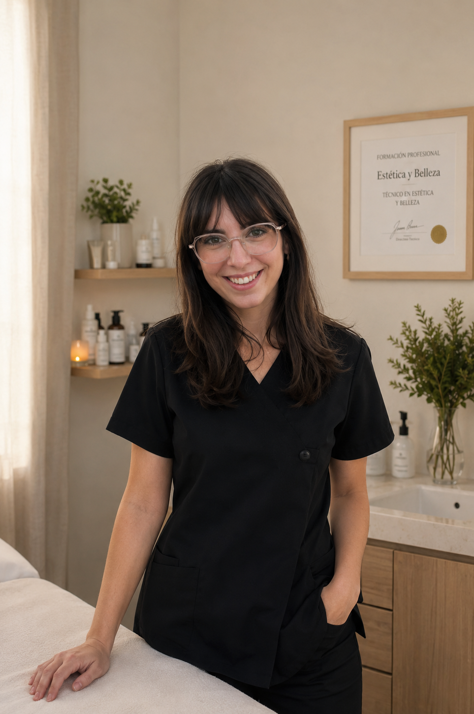
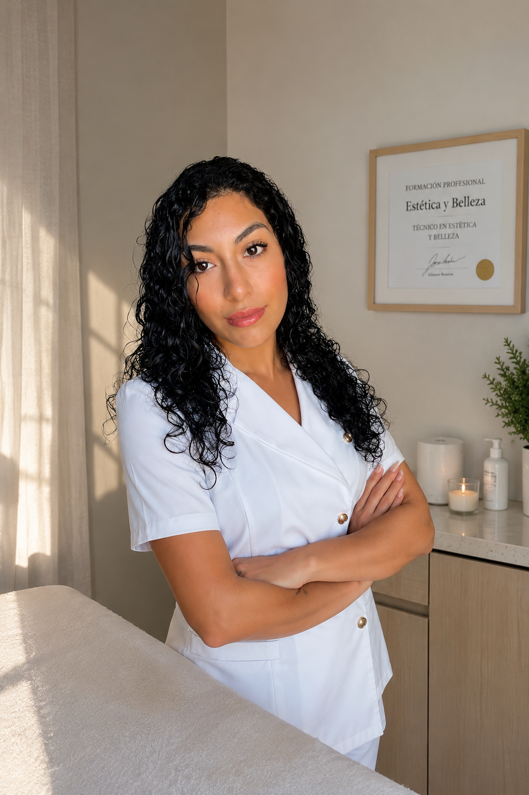
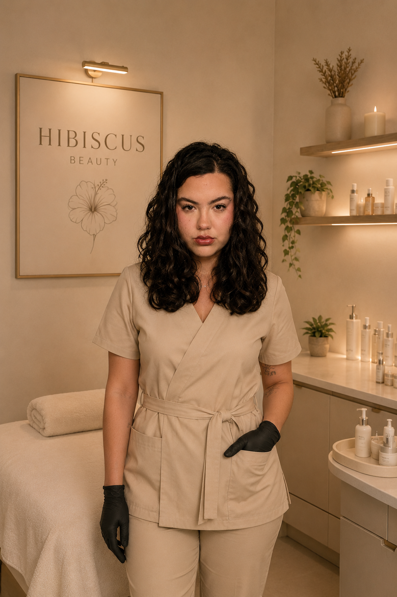
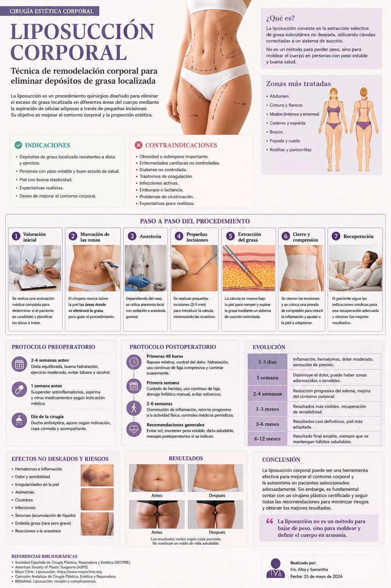

Tractaments Facials
Cures profundes per a tots els tipus de pell: neteja, nutrició i restauració de l'elasticitat amb protocols avançats.
Descobreix mésEstètica integral i benestar
Descobreix una experiència única on la bellesa i el benestar es fusionen per oferir-te el millor de tu mateixa.
Tractaments personalitzats per a cada tipus de pell i necessitat
Cures profundes per a tots els tipus de pell: neteja, nutrició i restauració de l'elasticitat amb protocols avançats.
Descobreix mésTractaments que combinen teràpia manual, aparatologia moderna i productes naturals per a resultats visibles.
Descobreix mésMassatges terapèutics i relaxants per alliberar tensions i restaurar l'equilibri del cos i la ment.
Descobreix mésMaquillatge professional per a qualsevol ocasió, realçant la teva bellesa natural amb tècniques modernes.
Descobreix més
A Hibiscus Beauty som un equip de professionals especialitzades en estètica integral i benestar. La nostra passió és acompanyar-te en el teu camí cap a la millor versió de tu mateixa.
Cada tractament és personalitzat, dissenyat específicament per a les teves necessitats i objectius.
Cada servei és una experiència dissenyada per a tu

Protocols personalitzats per a cada tipus de pell, amb tècniques avançades i productes d'alta qualitat per a resultats visibles des de la primera sessió.

Tractaments integrals per al cos que combinen aparatologia d'última generació amb tècniques manuals per a resultats òptims i duradors.

Massatges terapèutics i de benestar per alliberar la tensió muscular, millorar la circulació i promoure la relaxació profunda del cos i la ment.

Maquillatge professional per a qualsevol ocasió especial, realçant la teva bellesa natural amb tècniques modernes i productes premium.
Som un equip de professionals especialitzades en estètica integral i benestar, amb la missió d'oferir-te tractaments d'alta qualitat en un ambient de confiança.

Tècnica Superior en Estètica Integral i Benestar
Especialitzada en drenatge limfàtic, tractaments amb aromaterapia, massatges relaxants i tractaments amb aparatologia.

Especialista en Tractaments Facials
Especialitzada en tractaments facials, cura de la pell i protocols personalitzats segons el tipus de pell.

Especialista en Maquillatge i Benestar
Especialitzada en maquillatge professional, tractaments corporals i tècniques de benestar.
La nostra filosofia es basa en combinar la innovació tecnològica amb tècniques manuals per oferir resultats excepcionals. Creiem en un enfocament holístic de la bellesa i el benestar.
No tractem únicament la superfície; anem més a fons per entendre les necessitats úniques de cada persona i crear un pla de tractament personalitzat que aborda tant el benestar emocional com el físic.
Cuidem el cos, la ment i l'esperit com un tot integrat per al teu benestar complet.
Fem servir aparatologia d'última generació per oferir resultats efectius i duradors.
Prioritzem productes naturals i orgànics respectuosos amb la teva pell i el medi ambient.
Cada tractament és dissenyat específicament per a les teves necessitats i objectius individuals.
A Hibiscus Beauty atenem totes les dones que valoren la seva cura personal i el seu benestar
Atenem totes les etapes de la vida femenina, amb tractaments adaptats a cada edat i necessitat específica.
Per a qui busca moments de qualitat per cuidar-se i sentir-se bé com a ritual de benestar diari.
Tractaments específics per a l'acné, taques, pell seca, sensible o amb necessitats especials.
Per a qui busca desconnectar del dia a dia i recuperar l'energia i l'equilibri interior.
Tractaments corporals efectius per millorar la textura de la pell i la silueta de manera visible.
Massatges terapèutics per alliberar la tensió, millorar la postura i recuperar la mobilitat.
"Vaig venir per primera vegada amb molta desconfiança, però l'equip de Hibiscus Beauty em va fer sentir còmoda des del primer moment. El tractament facial va transformar la meva pell completament."
"Els massatges d'Alba són increïbles. M'ha ajudat molt amb els meus problemes de tensió cervical. Ara vinc regularment i noto una millora enorme en el meu benestar general."
"La Samantha és una experta en la pell. Va analitzar el meu tipus de pell i em va recomanar un protocol personalitzat que ha fet meravelles. Ara tinc la pell que sempre havia volgut."
Consells, tendències i informació útil per a la teva cura personal

Posa't en contacte amb nosaltres i et respondrem el més aviat possible
Dl – Dv: 9:00 – 20:00
Ds: 9:00 – 14:00
Cada protocol s'ha dissenyat de forma rigorosa per garantir els millors resultats per a cada tipus de pell.
Seca. Tibantor, poca flexibilitat, textura fina visible, pell no uniforme, porus tancats, inicis de línies d'expressió, sense lluminositat (apagada) i possible enrogiment.
Es retira el maquillatge i les impureses amb un desmaquillant suau adequat al tipus de pell.
Aplicació d'un gel o llet netejadora per eliminar restes de brutícia, excés de sèu i preparar la pell.
S'equilibra el pH de la pell i s'aporta una sensació calmant i refrescant.
S'aplica un peeling suau amb alfa-hidroxiàcids per eliminar cèl·lules mortes, suavitzar la textura i afavorir la penetració dels actius.
S'analitza l'estat de la pell per detectar necessitats específiques abans de continuar el tractament.
Es realitza vaporització per obrir el porus, estovar impureses i facilitar les extraccions.
AparatologiaS'eliminen punts negres i impureses de manera higiènica i controlada.
Aplicació de l'aparell d'alta freqüència per calmar la pell, tancar porus i actuar com a bactericida i cicatritzant.
AparatologiaAplicació de fototeràpia LED per calmar, regenerar i millorar l'aspecte general de la pell.
AparatologiaAplicació d'un sèrum amb Àcid Hialurònic, Aloe Vera i Vitamina C per aportar hidratació, lluminositat i acció antioxidant a la pell.
Crema amb Vitamina E i Niacinamida per reforçar la barrera cutània, calmar i mantenir la hidratació.
Protecció imprescindible després del tractament facial.
Imprescindible1 sessió setmanal o quinzenal (fase inicial). Manteniment mensual segons necessitats de la pell.
Normal. Producció equilibrada de sèu i hidratació, bona barrera cutània, pell suau i uniforme, porus poc visibles, bona il·luminositat.
Neteja suau i respectuosa que elimina el maquillatge i les impureses sense alterar la barrera cutània.
Aplicació d'un netejador suau per completar la neteja i preparar la pell.
S'equilibra el pH i s'aporta una sensació calmant i refrescant.
Àcid làctic / àcid mandèlic per renovar suaument la pell i afavorir la penetració dels actius.
Es valora l'estat i les necessitats de la pell per personalitzar el nucli del tractament.
Àcid hialurònic d'alt i baix pes molecular per a hidratació en profunditat i a la superfície de la pell.
Reforça la barrera cutània i aporta hidratació duradera.
Massatge suau per activar la circulació i afavorir l'absorció dels actius.
Estimula la regeneració cel·lular, aporta fermesa i hidratació intensiva.
Fototeràpia de llum vermella per estimular col·lagen, millorar la hidratació i aportar lluminositat.
AparatologiaReforça la barrera cutània, equilibra i manté la hidratació de la pell.
Textura lleugera. Protecció imprescindible al final de qualsevol tractament facial.
Imprescindible1 sessió cada 4–6 setmanes. Manteniment regular per conservar l'equilibri i la lluminositat de la pell.
Seca. Tibantor, poca flexibilitat, textura fina visible, pell no uniforme, porus tancats, inicis de línies d'expressió, sense lluminositat (apagada) i possible enrogiment.
Amb llet o olis vegetals (mantega de karité, jojoba o argà). Neteja suau respectant la barrera lipídica.
Elimina restes de cèl·lules mortes i equilibra el pH de la pell.
Hidratant i queratolítica suau per eliminar cèl·lules mortes i afavorir la penetració dels actius. També s'utilitzen enzims de papaia.
Hidrolat de roses per eliminar restes de cèl·lules mortes, equilibrar el pH i secar l'excés d'humitat.
El vapor d'ozó ablaneix el porus i facilita l'extracció higiènica i controlada.
AparatologiaAplicació de tònic per equilibrar el pH de la pell post-extraccions.
Per tancar el porus, cicatritzar i actuar com a bactericida. S'aplica tònic equalitzador de pH abans i després.
AparatologiaVermell: hidratació i regeneració. Groc: calma la pell i redueix la sensació de tibantor.
AparatologiaPèptids i Àcid hialurònic per hidratar la pell en profunditat, aprofitant que la pell està preparada per a màxima absorció.
Col·lagen i Àcid hialurònic. Efecte intensiu hidratant i calmant.
Rica en Escualà i Pèptids per reparar, nodrir i mantenir els resultats del tractament.
Textura crema hidratant amb Àcid hialurònic i Vitamina E. Imprescindible en tots els tractaments facials.
Imprescindible1 sessió cada 3–4 setmanes. En casos de deshidratació severa: 1 sessió cada 2 setmanes inicialment, després manteniment mensual.
Normal. Producció equilibrada de sèu i hidratació, bona barrera cutània, pell suau i uniforme, porus poc visibles, bona il·luminositat.
Es retira el maquillatge i les impureses amb un desmaquillant suau adequat al tipus de pell.
Aplicació d'un gel o llet netejadora per eliminar restes de brutícia, excés de sèu i preparar la pell.
S'equilibra el pH de la pell i s'aporta una sensació calmant i refrescant.
S'aplica un peeling suau amb alfa-hidroxiàcids per eliminar cèl·lules mortes, suavitzar la textura i afavorir la penetració dels actius.
S'analitza l'estat de la pell per detectar necessitats específiques abans de continuar el tractament.
Es realitza vaporització per obrir el porus, estovar impureses i facilitar les extraccions.
AparatologiaS'eliminen punts negres i impureses de manera higiènica i controlada.
Aplicació de l'aparell d'alta freqüència per calmar la pell, tancar porus i actuar com a bactericida i cicatritzant.
AparatologiaAplicació de principis actius com Vitamina E i Niacinamida per hidratar, protegir i equilibrar la pell.
Es realitza un massatge per activar la circulació i aportar relaxació.
Aplicació de crema hidratant per mantenir el nivell òptim d'hidratació de la pell.
Finalització imprescindible del tractament per protegir la pell després de l'exfoliació i evitar sensibilitzacions.
Imprescindible1 sessió cada 4–6 setmanes. Manteniment regular segons necessitats de la pell.
Grassa. Sobreproducció de sèu, excés de lípids a l'estrat corni, obstrucció dels porus, brillantor, porus dilatats, textura més gruixuda i irregular, comedons, pústules i pàpules.
Neteja de la pell amb gel o escuma específica per eliminar impureses, excés de sèu i restes de maquillatge.
Tònic amb bardana, castany d'índies, romaní i sàlvia per regular la producció de sèu i refrescar la pell.
Aplicació d'un scrub d'os de préssec per eliminar cèl·lules mortes i afavorir la renovació cutània.
S'analitza l'estat de la pell per detectar necessitats i adaptar el tractament.
Aplicació de vapor per obrir el porus i facilitar les extraccions.
AparatologiaS'eliminen punts negres i impureses de manera higiènica i controlada.
Aplicació per calmar la pell, tancar porus i actuar com a bactericida i cicatritzant.
AparatologiaActiu purificant i seborregulador que ajuda a reduir imperfeccions i controlar l'excés de greix.
Per equilibrar la producció de sèu, minimitzar porus i millorar la textura de la pell.
Mascareta purificant per absorbir l'excés de greix i deixar la pell més neta i equilibrada.
Fototeràpia LED per calmar la pell i ajudar a reduir inflamacions i vermellors.
AparatologiaGel hidratant lleuger amb arbre de te i extracte de cogombre per hidratar sense aportar greix.
Protecció solar imprescindible i adequada per a pell grassa, sense aportar brillantor ni obstruir porus.
Imprescindible1 sessió cada 2–4 setmanes segons l'estat de la pell. Manteniment periòdic per controlar l'estat cutani.
Pell madura amb arrugues i línies fines, pèrdua de fermesa, pell apagada, deshidratació, to desigual i regeneració cel·lular disminuïda.
Textura d'oli amb Vitamina E i Pantenol. Nodreix mentres neteja.
Hidrata, calma i prepara la pell per als actius del tractament.
Àcid làctic + àcid glicòlic. Estimula la renovació cel·lular i millora la textura.
Vermell: estimula col·lagen i elastina. Groc: millora circulació i lluminositat.
AparatologiaEstimula el metabolisme cel·lular, augmenta la producció de col·lagen i elastina, redueix arrugues, activa la circulació. Pell més densa i elàstica.
AparatologiaRetinol + pèptids. Tractament principal antiedat per a pell preparada.
Activa la circulació sanguínia, produeix col·lagen, augmenta fermesa i elasticitat, relaxa la musculatura.
Àcid hialurònic + col·lagen. Efecte intensiu hidratant i reafirmant. S'aplica hidrolat d'aigua de roses al finalitzar.
Ceramides i Vitamina E. Repara, nodreix i manté els resultats.
Filtres UVA/UVB d'ampli espectre, antioxidant amb filtre físic. Imprescindible.
ImprescindibleMínim 6–12 sessions. Envelliment avançat fins a 12–15. Freqüència: 1–2 per setmana. Manteniment: 1 al mes.
Tonalitat desigual, presència de taques solars o melasma, possible pell sensibilitzada, textura irregular o deshidratació.
Llet desmaquillant amb Niacinamida (baixa concentració) i extracte de regalèssia (Glabridina). Acció despigmentant suau.
Aigua de roses de damascena + flor de taronger (Azahar). Calma, neteja i prepara la pell per al tractament.
Àcid glicòlic + àcid mandèlic. Renueva la pell, elimina cèl·lules mortes i redueix les taques.
Aigues de rosa damascena i flor de taronger per calmar la pell post-peeling.
Verd: actua directament sobre la pigmentació. Groc: redueix vermellors. Vermell: estimula regeneració i col·lagen.
AparatologiaÀcid kòjic + àcid tranexàmic + àcid azelaic. Bloqueja la formació de melanina i aclareix la pell.
Reforça el tractament, millora la lluminositat. S'aplica hidrolat d'aigua de roses al retirar.
Niacinamida i ceramides. Reforça la barrera cutània i manté el tractament.
Textura llet, filtres UVA/UVB ampli espectre amb filtre físic. Absolutament imprescindible en tractaments de pigmentació.
ObligatoriMínim 6–10 sessions. Melasma o hiperpigmentació profunda fins a 10–12. Freqüència: cada 7–10 dies. Manteniment: 1 al mes.
Protocols especialitzats per tractar alteracions corporals i millorar la qualitat de la pell de forma progressiva.
Les estries vermelles responen millor al tractament. Les blanques requereixen constància i gestió d'expectatives.
Desmaquillant corporal amb glicerina i tensioactius suaus per una neteja respectuosa.
Rosa + Hamamelis per equilibrar la pell i preparar-la per als actius del tractament.
Àcid làctic + bromelina. Renueva la pell i elimina cèl·lules mortes afavorint la penetració dels actius.
Centella asiàtica + pèptids + oli de rosa mosqueta. Hidrata, millora l'elasticitat, regenera la pell danyada.
Millora l'elasticitat, estimula la regeneració i hidrata en profunditat.
Mantega de karité + oli d'ametlles + rosa mosqueta per nutrir i mantenir la hidratació.
Textura llet. Protegeix la pell tractada de la radiació solar per garantir els resultats.
Imprescindible1–2 sessions per setmana. Mínim 6–10 sessions per a resultats visibles.
Llet desmaquillant amb cafeïna i centella asiàtica per activar i preparar la pell.
Mentol + Ginkgo biloba per calmar la pell i preparar-la per al tractament.
Renueva la pell i elimina cèl·lules mortes. La cafeïna activa la circulació local.
Tècnica manual per drenar la limfa, reduir i millorar l'aparença de la cel·lulitis.
L-carnitina + fucus algues + teofilina. Millora la circulació, drena i estimula la lipòlisi.
Trenca nòduls superficials, redueix tensió i ajuda a eliminar líquids retinguts.
AparatologiaAlga laminària + escina + extracte de pebre. Millora la textura de la pell i la circulació venosa.
Teobromina + silici orgànic + ruscus per estimular la circulació, reduir l'inflor i els líquids retinguts.
Nota protocol: Només una sessió d'envoltura. Cavitació als dos dies del primer tractament. DLM + Maderoterapia 2 cops per setmana.
8–12 sessions (cel·lulitis fibrosa pot requerir-ne més). Fase intensiva: 2/setmana. Manteniment: 1 cada 3–4 setmanes.